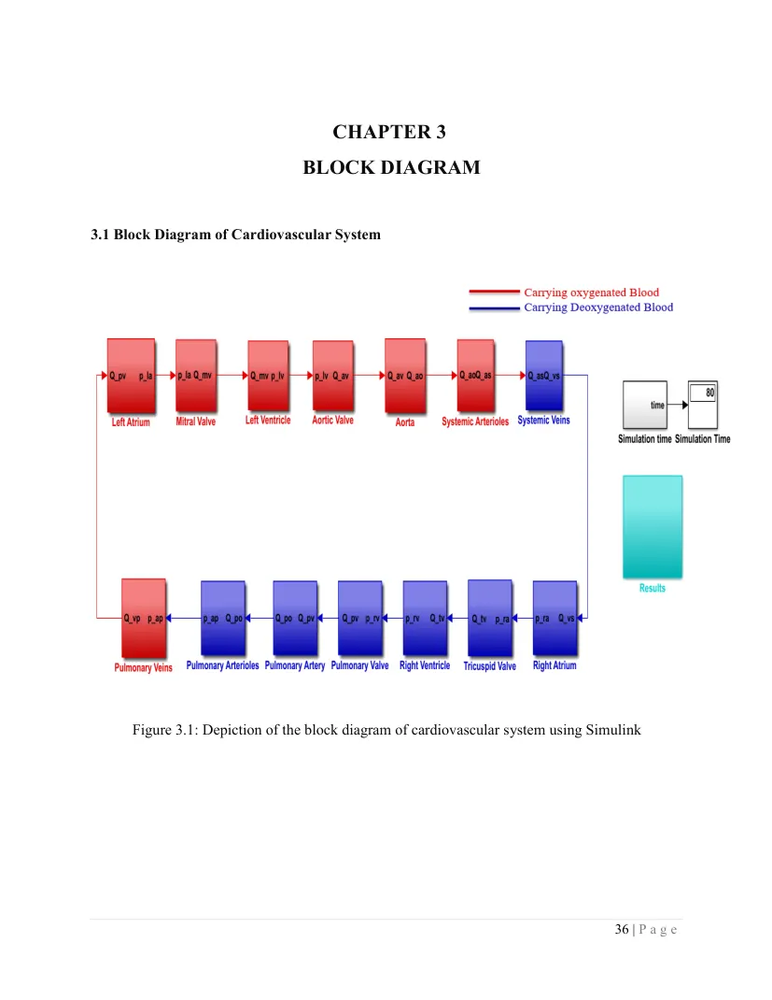
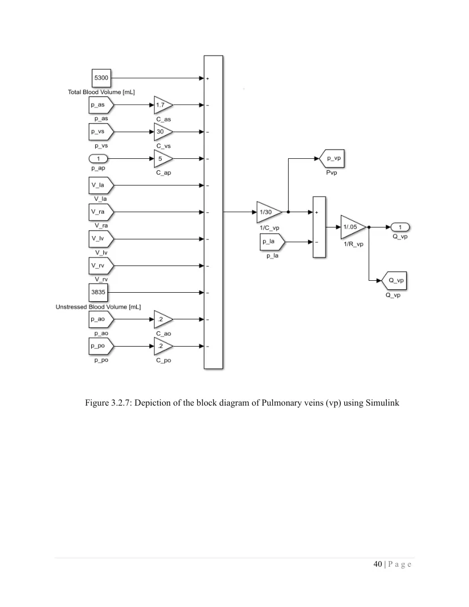
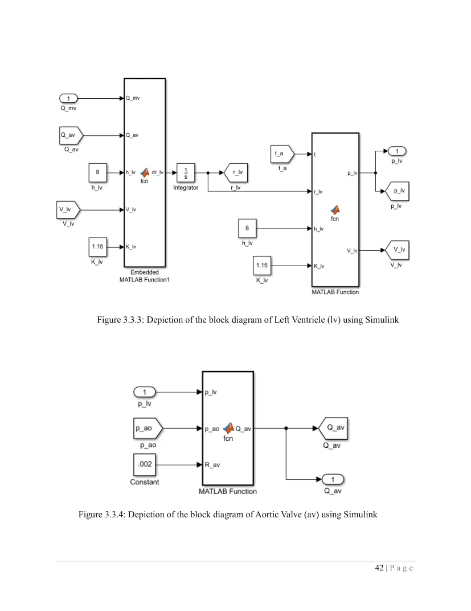
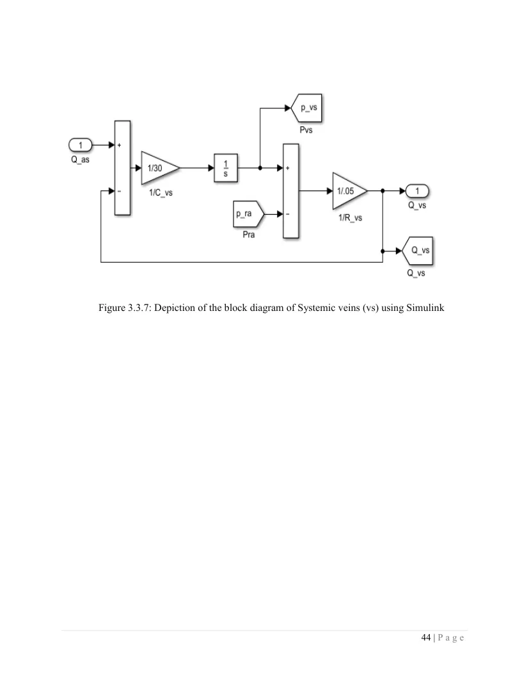
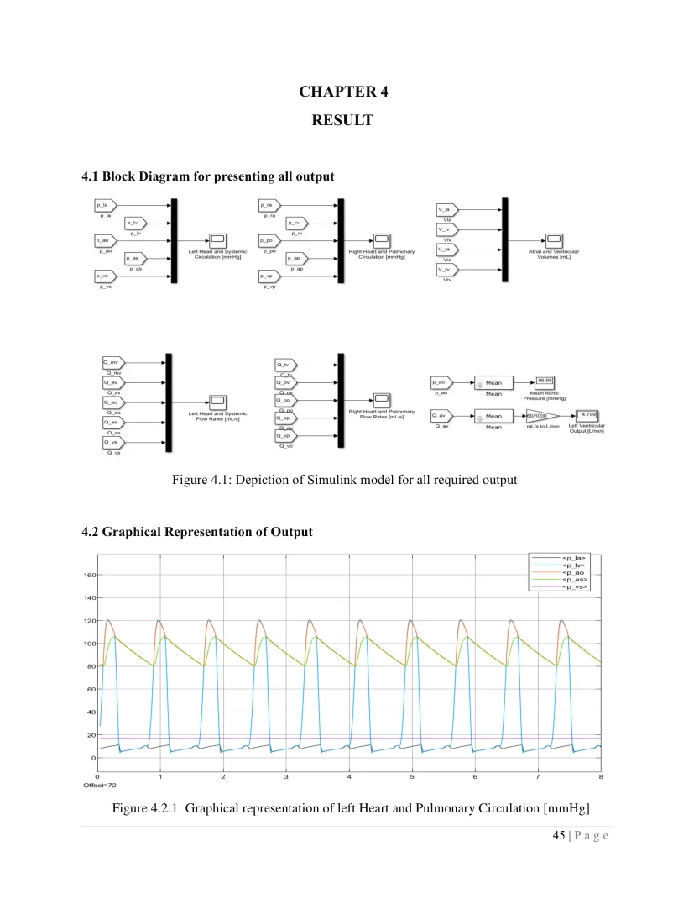
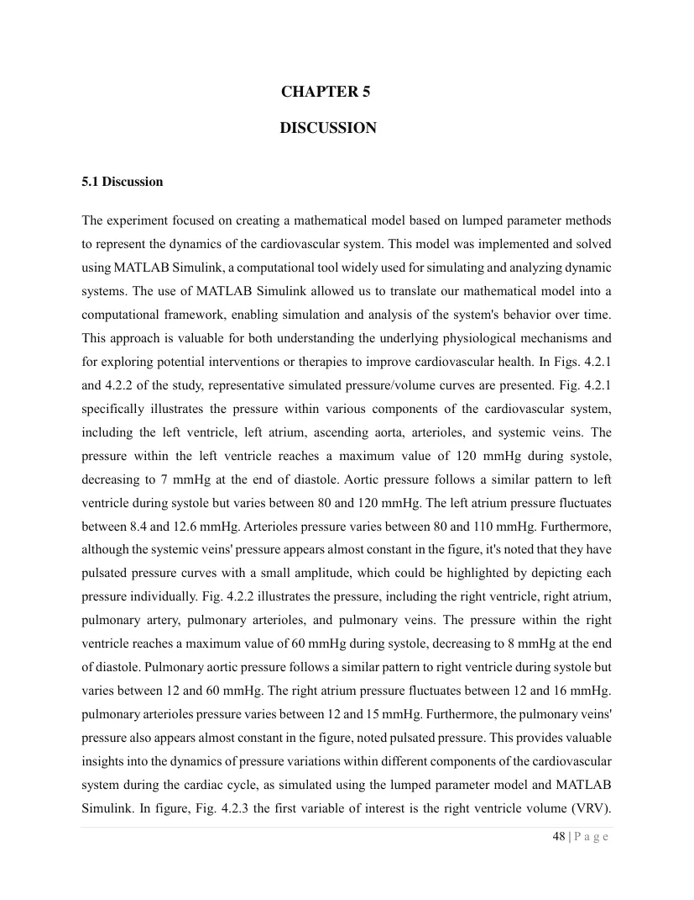

COMPONENT 01
Chambers & valves
Four cardiac chambers and four modeled one-way valves determine filling and ejection pathways.
From cardiac chambers and vascular networks to pressure–volume relationships: an interactive interpretation of a documented cardiovascular system simulation.
The source report documents a cardiovascular model in MATLAB/Simulink that combines chamber dynamics, cardiac valves, pulmonary circulation and systemic circulation. The model uses pressure, flow and volume relations to represent coupled cardiovascular behavior.
Cardiovascular resistance, compliance, inertance and chamber elastance supply the conceptual basis for its subsystem architecture. This site separates the source project's reported simulation outputs from its own illustrative learning module.
A schematic route through the left and right cardiac subsystems shows how blood flow connects the pulmonary and systemic pathways.
Four cardiac chambers and four modeled one-way valves determine filling and ejection pathways.
Systemic and pulmonary vessel properties link pressure differences with compartmental flows.
Cardiac activation and pressure–volume relationships characterize cyclic behavior.
The controls below visualize cardiac output and an idealized ventricular pressure–volume cycle. They are an independent educational example, not a new execution of the original Simulink project.
For education only. Values are not patient measurements, a physiological diagnostic model or a full multi-compartment numerical solution.
Simplified cycle geometry; cardiac output = heart rate × stroke volume. End-systolic volume = end-diastolic volume − stroke volume.
The following full-page views were extracted directly from the uploaded 52-page April 2024 KUET report. Pages 36–44 document Simulink architecture and subsystem diagrams; pages 45–48 contain presented output arrangements and hemodynamic plots. Click any image to inspect the original page.












The report provides equations, visual subsystem definitions and output plots. The native Simulink project, solver configuration, complete parameter tables and exported datasets would be necessary to reproduce the reported simulation independently. A separate step-by-step reproducibility roadmap is available in the repository.
Explore repository ↗